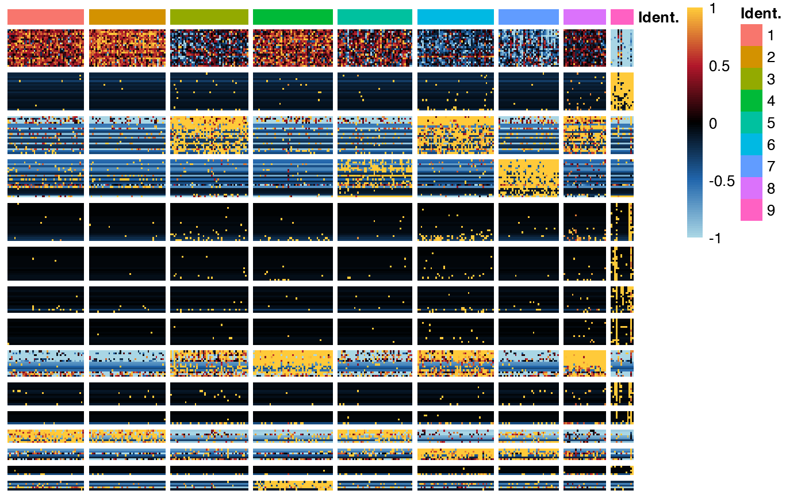

Plot the observed and simulated distance with the Kth nearest neighbors.
plot_heatmap(
object,
center = TRUE,
ceil = 1,
floor = -1,
cell_clusters = NULL,
show_dendro = TRUE,
use_top_genes = FALSE,
interactive = TRUE,
name = NULL,
xlab = NULL,
ylab = NULL,
colorbar_name = "Exp. level",
show_legend = TRUE,
colors = colors_for_gradient("Ju1"),
colors_cell_clusters = NULL,
row_labels = TRUE,
col_labels = FALSE,
label_size = 10,
line_size_vertical = 3,
line_size_horizontal = 3,
link = c("average", "complete", "single", "ward.D", "ward.D2", "mcquitty")
)A ClusterSet object.
A logical to indicate whether to center row..
A value for ceiling (NULL for no ceiling). Ceiling is performed centering.
A value for flooring (NULL for no flooring). Flooring is performed after centering.
A vector of cell clusters with cell barcodes as names.
A logical to indicate whether to show column dendrogram.
A logical to indicate whether to use highly similar genes in the slot top_genes of ClusterSet.
A logical to indicate if the heatmap should be interactive.
A title for the heatmap (if interactive is TRUE).
A title for the x axis (if interactive is TRUE).
A title for the y axis (if interactive is TRUE).
A title for the colorbar.
A logical to indicate whether to show colorbar.
A vector of colors.
A named vector of colors for cell identity annotations.
A logical to indicate whether to show row labels.
A logical to indicate whether to show col labels.
A value for label font size.
An integer for the size of horizontal white line which separate gene clusters.
An integer for the size of vertical white line which separate cell clusters.
The aggloremative criterion for hierarchical clustering. One of "average", "complete" or "single". Default to average.
Iheatmap-class object.
library(Seurat)
# Set verbosity to 1 to display info messages only.
set_verbosity(1)
# Load datasets
load_example_dataset('7871581/files/pbmc3k_medium_clusters')
#> |-- INFO : Dataset 7871581/files/pbmc3k_medium_clusters was already loaded.
load_example_dataset('7871581/files/pbmc3k_medium')
#> |-- INFO : Dataset 7871581/files/pbmc3k_medium was already loaded.
# Plot heatmap of 'top genes' of all gene clusters
pbmc3k_medium_clusters <- top_genes(pbmc3k_medium_clusters)
#> |-- INFO : Number of top genes is greater than the number of genes in cluster 6. All genes will be used.
#> |-- INFO : Number of top genes is greater than the number of genes in cluster 7. All genes will be used.
#> |-- INFO : Number of top genes is greater than the number of genes in cluster 8. All genes will be used.
#> |-- INFO : Number of top genes is greater than the number of genes in cluster 9. All genes will be used.
#> |-- INFO : Number of top genes is greater than the number of genes in cluster 10. All genes will be used.
#> |-- INFO : Number of top genes is greater than the number of genes in cluster 11. All genes will be used.
#> |-- INFO : Number of top genes is greater than the number of genes in cluster 12. All genes will be used.
#> |-- INFO : Number of top genes is greater than the number of genes in cluster 13. All genes will be used.
#> |-- INFO : Number of top genes is greater than the number of genes in cluster 14. All genes will be used.
#> |-- INFO : Number of top genes is greater than the number of genes in cluster 15. All genes will be used.
#> |-- INFO : Results are stored in top_genes slot of ClusterSet object.
plot_heatmap(pbmc3k_medium_clusters, use_top_genes=TRUE)
#> |-- INFO : cell_clusters is not NULL. Setting show_dendro to FALSE
#> |-- INFO : Centering matrix.
#> |-- INFO : Ceiling matrix.
#> |-- INFO : Flooring matrix.
#> |-- INFO : Ordering cells/columns using hierarchical clustering.
#> |-- INFO : Only top genes will be used.
#> |-- INFO : Plotting heatmap.
#> |-- INFO : Plot is interactive...
# Plot heatmap of gene cluster 1
plot_heatmap(pbmc3k_medium_clusters[1,])
#> |-- INFO : cell_clusters is not NULL. Setting show_dendro to FALSE
#> |-- INFO : Centering matrix.
#> |-- INFO : Ceiling matrix.
#> |-- INFO : Flooring matrix.
#> |-- INFO : Ordering cells/columns using hierarchical clustering.
#> |-- INFO : Plotting heatmap.
#> |-- INFO : Plot is interactive...
# Plot heatmap of gene cluster 1 and 3
plot_heatmap(pbmc3k_medium_clusters[c(1,3),])
#> |-- INFO : cell_clusters is not NULL. Setting show_dendro to FALSE
#> |-- INFO : Centering matrix.
#> |-- INFO : Ceiling matrix.
#> |-- INFO : Flooring matrix.
#> |-- INFO : Ordering cells/columns using hierarchical clustering.
#> |-- INFO : Plotting heatmap.
#> |-- INFO : Plot is interactive...
# Plot heatmap of 'top genes' of all gene clusters
# with cell ordered according to Seurat results
plot_heatmap(pbmc3k_medium_clusters, use_top_genes=TRUE, cell_clusters=Seurat::Idents(pbmc3k_medium))
#> |-- INFO : Extracting cell identity.
#> |-- INFO : Centering matrix.
#> |-- INFO : Ceiling matrix.
#> |-- INFO : Flooring matrix.
#> |-- INFO : Only top genes will be used.
#> |-- INFO : Plotting heatmap.
#> |-- INFO : Plot is interactive...
# Plot heatmap of 'top genes' of all gene clusters
# with cell ordered according to Seurat results
# (non interactive version)
plot_heatmap(pbmc3k_medium_clusters, use_top_genes=TRUE,
cell_clusters=Seurat::Idents(pbmc3k_medium),
interactive=FALSE, label_size = 2)
#> |-- INFO : Extracting cell identity.
#> |-- INFO : Centering matrix.
#> |-- INFO : Ceiling matrix.
#> |-- INFO : Flooring matrix.
#> |-- INFO : Only top genes will be used.
#> |-- INFO : Plotting heatmap.
